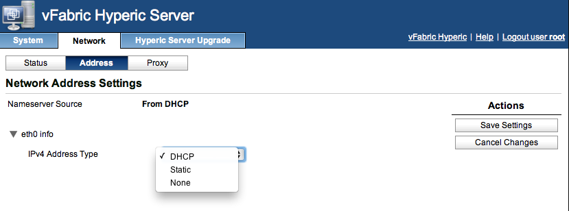
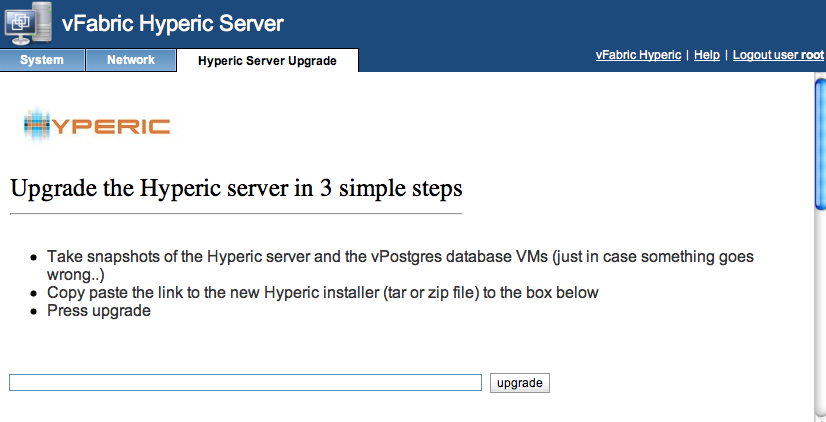

- About the vApp Management Console
- Connect to Hyperic Server vApp Management Console
- View Hyperic Server vApp System Information
- Set Hyperic Server vApp Timezone
- View Hyperic Server vApp Network Status
- Manage Hyperic vApp Network Address Settings
- Configure Hyperic vApp Proxy Settings
- Upgrade Hyperic Server vApp
This page instructions for using the web-based management console for administration of the Hyperic Server vApp.
About the vApp Management Console
The Hyperic Server vApp provides a web interface for performing common server administration tasks. The vApp console is available only when the vApp is powered on. The functions provided by the vApp console can also be performed from a command shell.
Connect to Hyperic Server vApp Management Console
Connect to the Hyperic Server vApp management console at this URL:
https://host:5480
where host is the IP address or DNS name of the Hyperic Server vApp host.
Log on to the management console as root, and supply the password that was defined during deployment for the Hyperic Server admin account, hqadmin by default.
View Hyperic Server vApp System Information
The System > Information page presents the following information about the vApp:
- Vendor
- Appliance Name
- Appliance Version
- Hostname
- OS Name
Two command buttons appear in the Actions section:
- Reboot — This command restarts the vApp.
- Shutdown — This command powers down the vApp.

Set Hyperic Server vApp Timezone
The System > Timezone page allows you to set the timezone.

View Hyperic Server vApp Network Status
The Network > Status page presents the following network details for the vApp:
- Hostname
- IPv4 Gateway
- Preferred DNS Server
- Alternate DNS Server
The following information is listed for each network interface on the vApp
- Interface Name
- Type — Indicates the method by which the interface obtains its IP address, for example, via DHCP, or static assignment.
- Address — IP address of the interface.
- Netmask — Subnet of the interface.
- Managed by VAMI — Indicates whether the interface is under Virtual Appliance Management Infrastructure (VAMI) management.

Manage Hyperic vApp Network Address Settings
The Network > Address page allows you to configure the method by which the interface obtains its IP address.

Configure Hyperic vApp Proxy Settings
The Network > Proxy page allows you to configure a proxy server for HTTP commmunications between the vApp machine and the external Internet.
To configure a proxy server:
- Check the Use a proxy server box.
- Enter the IP address or domain name of the proxy server in the HTTP Proxy Server field.
- Enter the port on the proxy server to connect to in the HTTP Port field.
- If the proxy server authenticates connections, enter the username for connecting to the proxy server in the Proxy Username field.
- If the proxy server authenticates connections, enter the password for connecting to the proxy server in the Proxy Password field.
- Click Save Settings.

Upgrade Hyperic Server vApp
The Hyperic Server Upgrade page allows you to upgrade a Hyperic Server vApp to a new version.
After taking snapshots of the Hyperic Server and database VMs, enter the path to the new Hyperic installer, and click upgrade.
